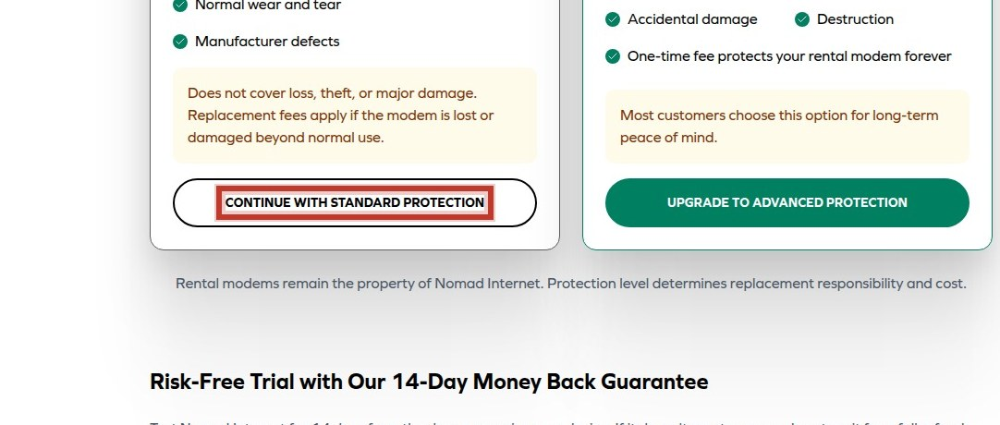
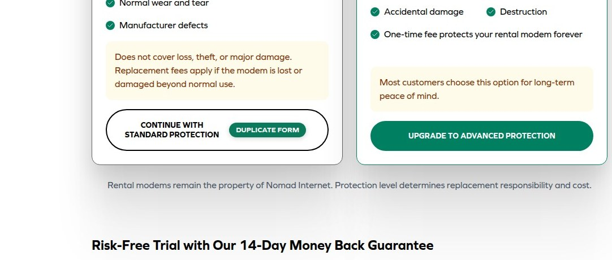
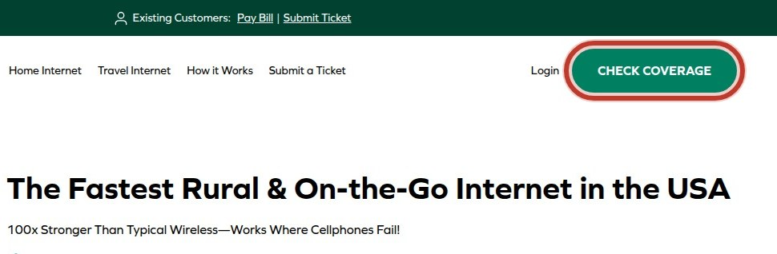
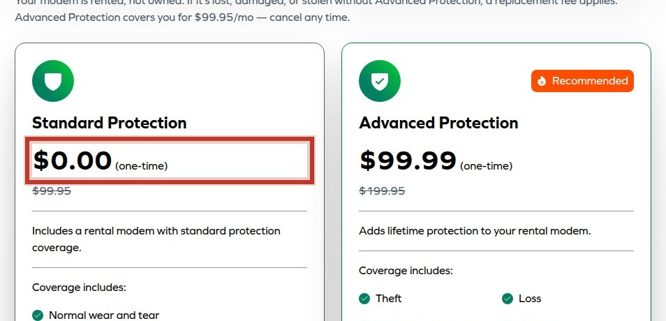
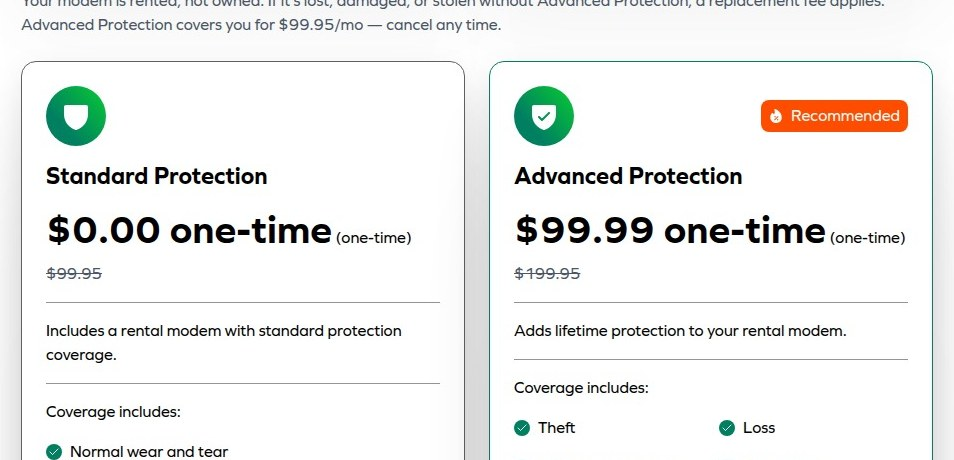

The primary conversion mechanism on this site is the coverage check funnel, but it is being diluted by competing CTAs, duplicate forms, and premature pricing display, causing users to hesitate or abandon before qualification.
Three competing h1 messages dilute the value proposition above the fold.
CTAs ask to check coverage but do not explain what qualification means, leaving visitors uncertain.
Multiple competing CTAs fragment the primary path, creating ambiguity about which action advances the user.


Two identical CONTINUE forms on the same page create ambiguity about the intended next step.

Prices displayed before coverage qualification cause users to self-select out based on sticker price.


Conflicting price points and fees near the CONTINUE form create uncertainty about commitment.
Gathered from third-party reviews, forums and video — the site’s own pages are excluded. Every quote was verified word-for-word against the page it links to; anything that could not be verified was discarded rather than paraphrased.
Instead, I was hit with a surprise charge of $139 just a few months later, $40 more than expected, without any prior notice given that my rate was going up.
they claimed the extra charge was for renting the router, which was never disclosed in the beginning
on March 1st 2023 I have left phone messages and emails and no response received an email on March 14th that my new plan was being canceled in three days called and left messages again no response
No one could tell me how to cancel. They just kept asking why I wanted to.
Many users expressed exasperation over slow speeds, unavailable customer support and faulty equipment among other issues.
Each surface starts at 100. The worst issue costs its full penalty — Urgent 25, High 12, Medium 5 — and each further issue costs 30% less than the one before, because the fifth problem on a page does not damage it as much as the first.
| Surface | Urgent | High | Score | Grade |
|---|---|---|---|---|
| Pricing & Plans | 2 | 3 | 49 | F |
| /Pages/Rural-Internet | 0 | 1 | 88 | B |
| Homepage | 0 | 2 | 92 | A |
| /Pages/Rural-Internet Page | 0 | 1 | 95 | A |
Grades: A 90+, B 80+, C 70+, D 60+, F below 60.
The sum of every finding's individual range. Each row is traffic × conversion × assumed lift band × order value:
| Finding | Lift band | Range |
|---|---|---|
| Value proposition fragmented | 0.5–2.0% | 0.1–0.4/1k |
| Qualification language vague | 0.5–2.0% | 0.1–0.4/1k |
| Competing CTAs split funnel | 2.0–8.0% | 0.4–1.6/1k |
| Duplicate forms create ambiguity | 2.0–8.0% | 0.4–1.6/1k |
| Pricing shown before qualification | 1.0–5.0% | 0.2–1.0/1k |
| Pricing ambiguity near form | 0.5–2.0% | 0.1–0.4/1k |
| Repeated identical headings | 0.5–2.0% | 0.1–0.4/1k |
| Conflicting page titles | 1.0–5.0% | 0.2–1.0/1k |
| Guarantee claims lack backing | 0.5–2.0% | 0.1–0.4/1k |
No traffic or order-value figures were supplied, so the total is a per-1,000-visitor rate against an assumed 2% baseline. Supply real figures and this becomes a dollar range.
Caveat that applies to every row: Across 127,000 experiments, 12% produced a statistically significant improvement on the primary metric; a healthy programme win rate is 10-30%. These are prizes if changes work, not forecasts.
A verified finding was measured directly — real-user field data, security headers, accessibility defects counted in the markup — and is reproducible by anyone. Everything else is expert inspection: valuable, but a hypothesis until tested.